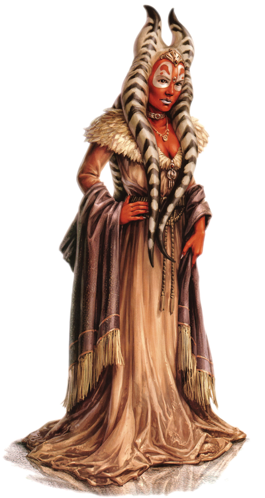

Togruta
togruta
Special Abilities: Togrutas begin the game with one rank in Perception. They still may not train Perception above rank 2 during character creation.
Pack Instincts: When performing the assist maneuver, Togrutas grant instead of
A carnivorous humanoid species from the planet Shili, Togrutas are easily recognized by the combination of their head-tails and hornlike montrals. Only Togrutas who are independent-minded—-a relatively rare trait for them—travel off-world.
Togrutas are a near-hairless, mammalian, humanoid species that average 1.7 meters in height. Their skin tones tend towards bold colors like orange or red, and most individuals have contrasting white pigmentation patterns scattered across their bodies. They have three—or rarely, four—head-tails. Two are normally draped across the front of the body, while the other falls to the back. Above these, they have two hollow montrals, which are used for a simple form of echolocation that enhances their keen senses.
Togrutas evolved from pack hunters, and their society continues to demonstrate this heritage. While urban life has begun to emerge, the majority of Togrutas still live in dense communal villages within Shili’s forested canopies and hidden valleys. In these places, they live in harmony with nature. Every member of a community is expected to learn to work in concert with other members of the pack, contributing to everyone’s overall success.
Togrutas have little sympathy for those who can’t contribute to society. However, most Togrutas quickly point out that contributions in the modern world can be wide and varied, ranging from the ability to construct valuable tools to the ability to entertain the rest of the pack through song or storytelling. This holds especially true in Shili’s growing urban areas, where keen minds can be more valuable than strong arms.
Most Togrutas consider excessive expressions of individuality to be a sign of social deviance. Yet in many instances, this same deviation is rewarded, as distinctive individuals can rise to positions of authority within Togrutas communities. Some outsiders have observed that the willingness for Togruta culture to excuse individuality generally depends on how successful and valuable those individuals are to the greater whole. If independent-minded Togrutas cannot succeed among their peoples, they tend to travel off-world, where they may find the attitudes of the wider galaxy more accepting.
Shili is in the Expansion Region, located near the Hydian Way. Shili’s natural environment features many scrublands and dense, canopied forests. Both feature the red-and-white-colored turu-grass, which matches a Togruta’s natural coloration. The world’s wildlife includes a broad range of prey animals and other predators, including the savage akul. In the past, whole tribes of Togrutas frequently worked together to overcome prey and then proudly incorporated portions of their kills into their wardrobes.
However, many Togrutas have traveled off-world to establish colonies in the years since they became aware of wider galactic society. Freed from some of the traditions of their homeworld, these Togruta colonies have developed wildly different cultural paths. The artisan colony of Kiros, for example, focuses on nurturing creative expression and peaceful coexistence, along with a higher level of individuality among its citizens. Colonial Togrutas can thus differ greatly in outlook and attitudes from their cousins on Shili.
The Togrutas were members of the Old Republic for thousands of years. While all speak the native tongue of Togruti, most also speak Basic. Togruti incorporates trills, which have varied meanings depending upon tremors from a speaker’s head-tails.
Togrutas do not have a native Force tradition, but numerous members of the species did travel off-world to join the Jedi Order. Jedi scholars believe that Togrutas have a heightened affinity for the Force. This is most commonly demonstrated through their exceptional spatial senses, which play a major role in their ability to respond to their environment.
Traditionally, Togruta hunters take the teeth of an akul after defeating it. They craft these into jewelry, most commonly in the form of a headdress, interworking the teeth with precious metals and stones. Some Togrutas who travel offworld adapt this practice with trophies taken from other opponents.
Some individuals who meet Togrutas make the mistake of assuming their trophy-taking implies they are primitive savages. Of course, this assumption could not be further from the truth, as such people often find out to their detriment.